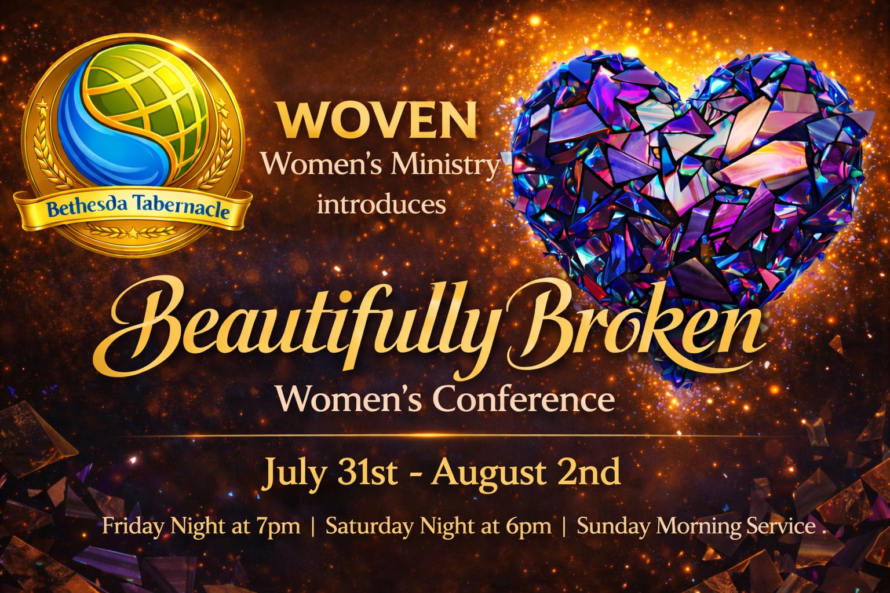
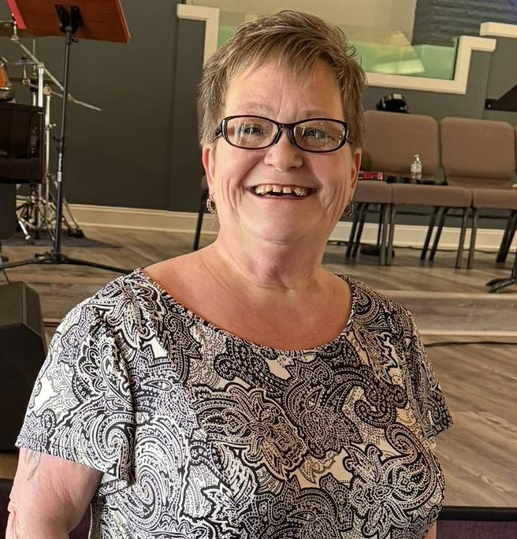
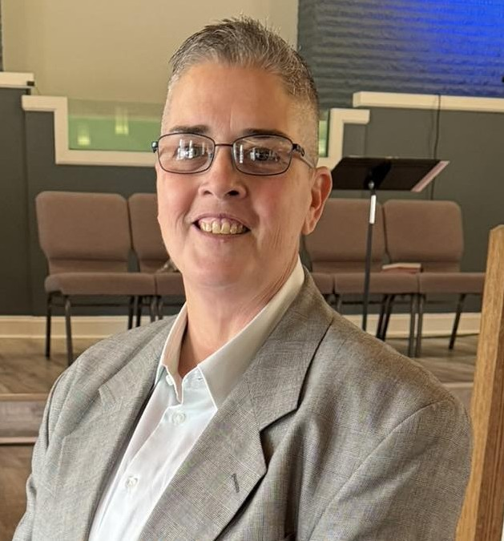
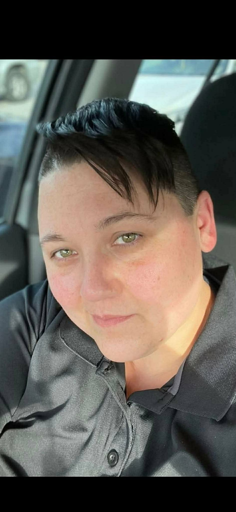
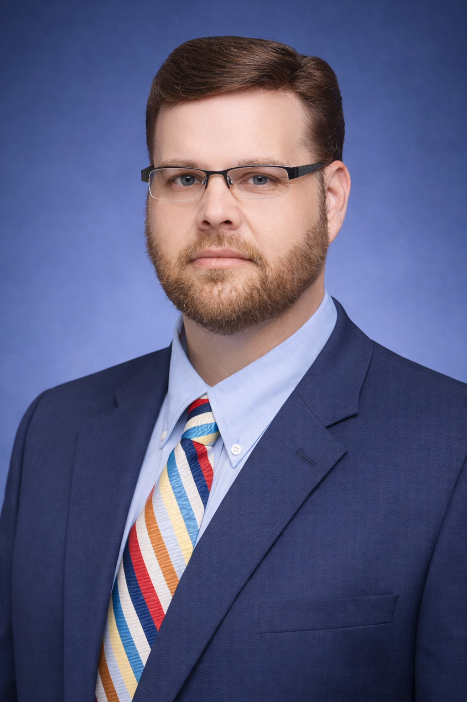

Broken pieces in the hands of Jesus become something beautiful.
Join women for a weekend filled with worship, healing, restoration, encouragement, friendship, and grace.

Friday Evening Speaker

Saturday Breakout Session

Saturday Evening Speaker

Sunday Worship Service
Bethesda Tabernacle is home to a loving church family in Lexington, Kentucky dedicated to worship, ministry, outreach, healing, and serving the community with compassion.
Church ministries include worship gatherings, community outreach efforts, food pantry ministry, fellowship opportunities, discipleship, and a desire to help people encounter Jesus and grow in faith.
Visit below for worship information, service times, livestreams, ministries, and upcoming events.
Hotel recommendations below are provided as a convenience for conference guests and are linked through Booking.com for the Beautifully Broken Women's Conference experience.
209 Ruccio Way
Lexington, KY 40503
Comfortable suites located near Bethesda Tabernacle with extended stay amenities.
View Hotel
126 East Lowry Lane
Lexington, KY 40503
Convenient location near shopping, dining, and the conference venue.
View Hotel